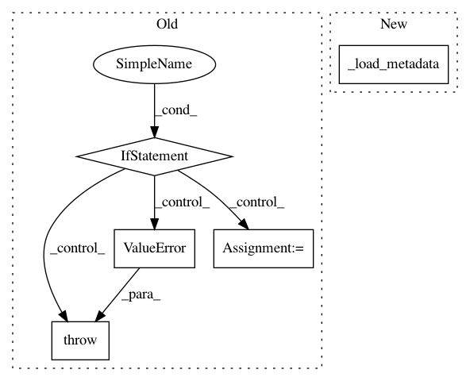

26a096c2e9cce537bd67f53955008aed7a570e15,pyannote/audio/embedding/generators.py,SessionWiseSpeechSegmentGenerator,__init__,#SessionWiseSpeechSegmentGenerator#Any#Any#Any#Any#Any#Any#Any#Any#Any#,105
Before Change
duration=None, min_duration=None, max_duration=None,
label_min_duration=0., parallel=1):
if per_fold is None:
msg = f"per_fold = None is not supported."
raise ValueError(msg)
super().__init__()
self.feature_extraction = feature_extraction
self.per_label = per_label
self.per_fold = per_fold
self.per_epoch = per_epoch
self.duration = duration
self.min_duration = min_duration
self.max_duration = max_duration
self.label_min_duration = label_min_duration
self.parallel = parallel
def initialize(self, protocol, subset="train"):
Intialize one batch generator per file in the protocol
After Change
self.min_duration_ = 0. if self.min_duration is None \
else self.min_duration
self.weighted_ = True
self._load_metadata(protocol, subset=subset)
def _load_metadata(self, protocol, subset="train"):
In pattern: SUPERPATTERN
Frequency: 3
Non-data size: 5
Instances
Project Name: pyannote/pyannote-audio
Commit Name: 26a096c2e9cce537bd67f53955008aed7a570e15
Time: 2019-04-08
Author: hbredin@users.noreply.github.com
File Name: pyannote/audio/embedding/generators.py
Class Name: SessionWiseSpeechSegmentGenerator
Method Name: __init__
Project Name: pyannote/pyannote-audio
Commit Name: f70ce115022b64572bb5895e21088f4ae1023737
Time: 2020-03-03
Author: hbredin@users.noreply.github.com
File Name: pyannote/audio/embedding/approaches/triplet_loss.py
Class Name: TripletLoss
Method Name: __init__
Project Name: pyannote/pyannote-audio
Commit Name: 16c64325ee56307e3b29cc4bb215c771240161fc
Time: 2019-07-31
Author: bredin@limsi.fr
File Name: pyannote/audio/embedding/approaches/triplet_loss.py
Class Name: TripletLoss
Method Name: __init__